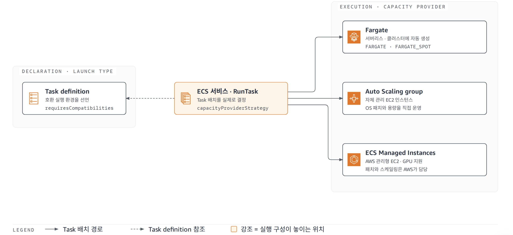
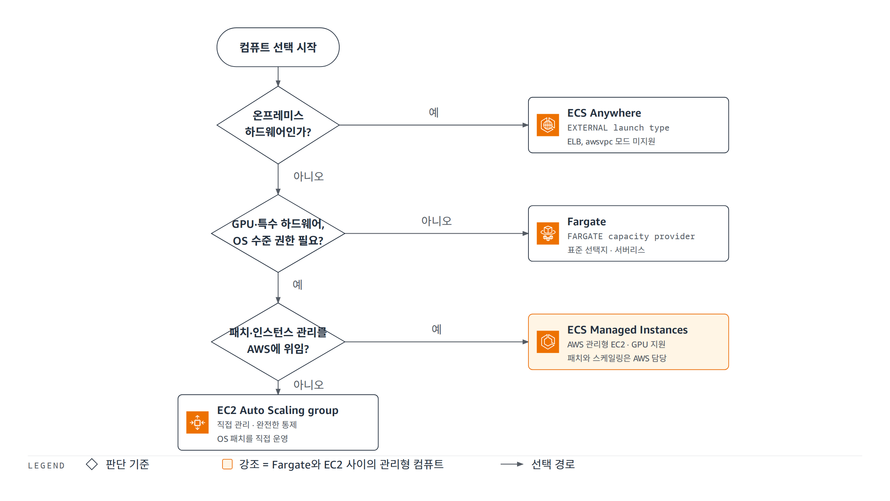

ECS Task를 어떤 컴퓨트에서 어떤 형태로 실행할지에 답합니다. launch type으로 만든 서비스는 다른 launch type으로 바꿀 수 없으므로 신규 서비스는 처음부터 capacity provider로 만드는 것이 AWS 권고이자 안전한 기본값입니다. GPU나 인스턴스 타입 선택이 필요하지만 OS 패치는 AWS에 맡기고 싶다면 Fargate와 EC2 사이의 ECS Managed Instances를 선택합니다.This post answers which compute an ECS task should run on and in what form it should run. A service created with a launch type cannot change to a different launch type, so creating new services with capacity providers from the start is both the AWS recommendation and the safe default. If you need GPUs or a choice of instance types but want AWS to handle OS patching, choose ECS Managed Instances, which sits between Fargate and EC2.
AI 시대로 전환이 가속화되면서 Amazon ECS가 다시 주목받고 있습니다. 모델 추론 서버부터 AI 에이전트와 에이전트가 호출하는 도구까지 컨테이너로 배포되는 워크로드가 증가했고 GPU 컴퓨트와 급격한 트래픽 변화를 감당하는 일들이 컨테이너 운영의 일상이 되었기 때문입니다. 하지만 ECS로 컨테이너 워크로드를 운영하다 보면 비슷한 고민과 마주치게 됩니다. EC2에서 제공되던 서비스를 Fargate로 이전할 때 시작 유형(launch type)이 변경되지 않아 어려움을 겪거나, GPU 인스턴스는 필요하지만 OS 패치 운영까지 직접 챙기기는 부담스럽습니다. 또한 6종으로 증가한 배포 전략 가운데 무엇을 선택해야 할지 판단하기 어렵습니다.
기업이 겪는 이 고민의 답은 한 가지 원칙으로 귀결됩니다. launch type은 이제 호환되는 실행 환경을 표시하는 용도로만 남기고 실제 실행은 용량 공급자(capacity provider)로 구성하라는 것입니다. 두 편에 걸쳐 이 선택지들을 정리합니다. 1부인 이 글에서는 원칙이 무엇을 의미하는지에서 시작해서 2026년 8월 기준 Amazon ECS의 컴퓨트와 실행 형태를 살펴보고 2부에서 배포 전략과 네트워크, 스토리지를 거쳐 상황별 선택 가이드를 제시합니다.
01
“ECS Task는 무엇으로 실행되는가”라는 질문에 대한 권고답변은 이제 두 가지 흐름으로 나뉩니다. launch type은 Task의 설계도 격인 Task definition이 어떤 실행 환경과 호환되는지를 나타내는 값입니다. capacity provider는 Task를 올릴 컴퓨트 용량을 실제로 공급하고 스케일링하는 실행 수단입니다. Amazon ECS 개발자 가이드는 launch type을 Task definition의 requiresCompatibilities 필드, 즉 호환되는 실행 환경을 선언하는 파라미터 용도로만 사용할 것을 권고합니다. 그리고 실제 실행은 capacity provider로 구성하라고 권고합니다.

launch type과 capacity provider가 1:1로 짝을 이루지는 않습니다. 표 1은 컴퓨트별 대응 관계와 함께, 어느 한쪽에만 존재하는 항목이 무엇인지 보여줍니다.
| 컴퓨트 | launch type (선언) | capacity provider (실행) |
|---|---|---|
| Fargate | FARGATE | FARGATE / FARGATE_SPOT: ECS가 모든 클러스터에 자동 생성, 별도 생성 불필요 |
| 자체 관리 EC2 | EC2 | Auto Scaling group |
| ECS Managed Instances | MANAGED_INSTANCES | ECS Managed Instances |
| 온프레미스 (ECS Anywhere) | EXTERNAL | 없음, launch type으로만 지정 |
| EC2 Spot Fleet | 없음, capacity provider 전용 | Spot Fleet (표기 상충, 아래 설명 참고) |
표 1. launch type 4종과 capacity provider의 대응 관계
온프레미스용 EXTERNAL은 launch type으로만 존재하고 Spot Fleet은 반대로 capacity provider 쪽에만 이름이 올라 있습니다. 다만 Spot Fleet 행은 유보가 필요합니다. 개발자 가이드에는 “Spot Fleet은 capacity provider로만 제공된다”는 문장이 있습니다. 하지만 같은 문단의 지원 목록(FARGATE, FARGATE_SPOT, Auto Scaling group, ECS Managed Instances)에는 빠져 있습니다. CreateCapacityProvider API 역시 Auto Scaling group과 Managed Instances 두 종류만 생성할 수 있습니다. 공식 문서 안에서도 표기가 엇갈리는 항목이므로 설계의 전제로 고려하지 않는 것이 안전합니다.
FARGATE SPOT을 사용한다면 중단 특성을 설계에 반영해야 합니다. Spot 중단 시 Task가 중지되기 2분 전에 경고가 오는데, Amazon EventBridge로 가는 Task 상태 변경 이벤트와 실행 중인 Task에 보내는 SIGTERM 시그널 두 경로로 전달됩니다. 컨테이너가 SIGTERM을 처리하지 못하면 stopTimeout(기본 30초, Spot에서는 120초 이하 권장)이 지난 뒤 SIGKILL을 받아 데이터가 유실될 수 있습니다. 용량이 부족할 때 ECS가 Spot을 온디맨드로 대체해 주지 않습니다. 용량이 생길 때까지 시작을 재시도할 뿐입니다.
혼합 규칙은 계층에 따라 다릅니다. 하나의 클러스터에는 모든 종류의 capacity provider를 함께 등록할 수 있지만 Task를 어느 provider에 어떤 비중으로 배치할지 정하는 capacity provider strategy 안에서는 서로 다른 종류를 혼용할 수 없습니다. 클러스터 하나에 연결할 수 있는 capacity provider는 최대 20개이며 이 값은 상향 조정 대상이 아닙니다.
이 구분이 실무에서 차이를 만드는 지점은 이미 운영되고 있는 서비스를 마이그레이션 할 수 있는지를 판단하는 일입니다. 표 2는 UpdateService API로 바꿀 수 있는 방향과 바꿀 수 없는 방향을 정리했습니다.
| 전환 방향 | 가능 여부 | 세부 |
|---|---|---|
| capacity provider → capacity provider | 가능 | 종류에 관계없이 전부 가능 |
| launch type → capacity provider | 가능 | 전부 가능 |
| launch type → launch type | 불가 | EC2 launch type에서 Fargate launch type으로 직접 전환 불가. 문서는 Fargate capacity provider 사용을 안내 |
| capacity provider → launch type | 불가 (예외 1건) | launch type으로 생성했던 서비스에 한해 capacityProviderStrategy를 비어있는 리스트로 넘기면 원래 launch type으로만 복귀 가능 |
표 2. launch type과 capacity provider 사이의 서비스 전환 매트릭스
핵심은 비대칭성입니다. launch type으로 시작한 서비스는 다른 launch type으로 변경할 방법이 없습니다. capacity provider로 이전하는 것은 언제든 가능합니다. 반대 방향으로 이전은 launch type으로 생성했던 서비스가 UpdateService에 비어있는 capacityProviderStrategy를 넘겨 원래 값으로 복귀하는 한 가지 경로뿐입니다.
따라서 EC2에서 Fargate로 옮기고 싶은 경우처럼 launch type 사이의 이동이 필요해 보이는 상황의 실제 방법은, launch type 전환이 아니라 Fargate capacity provider로의 전환입니다. 실행을 capacity provider로 구성해 두면 이후 어떤 capacity provider로든 이전 할 수 있기 때문에, 신규 서비스는 처음부터 capacity provider로 만드는 것이 AWS 권고이자 안전한 기본값입니다.
02
ECS의 컴퓨트 선택은 오랫동안 둘 중 하나를 선택해야 하는 문제였습니다. 인프라를 AWS에 전부 위임하는 대신 인스턴스 선택권이 없는 Fargate와 고객이 선택권을 가져가는 대신 OS 패치까지 해야 하는 EC2로 나뉘어 있었습니다. GPU는 필요하지만 패치는 맡기고 싶은 고객은 선택지가 없었습니다. ECS Managed Instances는 이 공백을 채우는 세 번째 관리형 컴퓨트입니다.
인스턴스는 고객 계정에 생성되지만 소프트웨어와 OS 패치, 인스턴스 스케일링, 유지보수는 AWS가 담당합니다. 동시에 EC2 전체 기능에 접근할 수 있기 때문에 인스턴스 타입 선택과 GPU 사용이 가능합니다. 표 3은 컴퓨트 4종의 책임 분담과 과금 구조를 비교합니다.
| 컴퓨트 | 인프라 소유 | OS/패치 책임 | 인스턴스 타입 선택 | GPU, 특수 하드웨어 | 과금 |
|---|---|---|---|---|---|
| Fargate | AWS | AWS | 불가 (vCPU/메모리만 지정) | 불가 | Task가 요청한 vCPU/메모리/스토리지 기준, 초 단위 (최소 1분) |
| ECS Managed Instances | 고객 계정 | AWS | 가능 (속성 기반 선택) | 가능 | EC2 인스턴스 요금 + 인스턴스 타입별 관리 요금, 초 단위 (최소 1분) |
| EC2 (Auto Scaling group) | 고객 | 고객 | 가능 | 가능 | EC2 등 기반 리소스 요금만 (ECS 오케스트레이션 무료) |
| External (온프레미스) | 고객 (온프레미스) | 고객 | 해당 없음 | 가능 | 등록 인스턴스당 $0.01025/시간 (최소 1시간) |
표 3. 컴퓨트 4종 비교: 소유, 책임, 선택권, 과금
External(ECS Anywhere)은 ELB 로드밸런싱과 awsvpc 모드 등이 지원되지 않는 기능 제약을 전제로 선택해야 하며 제약 목록은 2부의 상황별 선택 가이드에서 다시 다룹니다.
표 3에서 Fargate의 “vCPU/메모리만 지정”도 제약 없는 조합은 아닙니다. 0.25 vCPU에서 32 vCPU까지 CPU 티어별로 허용되는 메모리 값이 정해진 조합만 유효합니다. 예를 들어 0.25 vCPU는 512MiB, 1GB, 2GB 세 가지입니다. 조합을 벗어난 값은 RegisterTaskDefinition 단계에서 에러로 거부됩니다.
Managed Instances의 과금은 두 가지로 구성됩니다. 표준 EC2 인스턴스 요금에 인스턴스 타입별로 다른 관리 요금이 더해지고 두 요금 모두 초 단위로 계산되며 최소 1분이 적용됩니다. 관리 요금은 EC2 구매 옵션과 무관해서 Savings Plans, 예약 인스턴스, Spot 할인은 EC2 요금 쪽에만 적용됩니다. 자세한 과금은 Amazon ECS 요금 페이지에서 확인할 수 있습니다.
ECS 개발자 가이드는 Managed Instances를 선택할 상황을 다섯 가지로 제시합니다.
이미 Fargate에서 운영 중이라면 Managed Instances 마이그레이션 가이드를 참고해 기존 워크로드를 옮길 수 있습니다.
Managed Instances에서는 EC2 인스턴스 시작 설정을 담는 launch template을 ECS가 직접 생성합니다. 인스턴스 프로파일, 네트워크, 스토리지, 용량 옵션, 인스턴스 요건이 모두 이 템플릿으로 관리됩니다. 표 3의 “속성 기반 선택”은 인스턴스 타입을 하나씩 고르는 대신 vCPU 수와 메모리 크기 범위(필수), 가속기 요건(선택) 같은 속성을 정의하면 ECS가 부합하는 타입을 자동으로 고르는 방식입니다. 특정 타입 지정은 특수 하드웨어가 필요한 워크로드로 한정하라는 것이 문서의 권고입니다.
CAPACITY_PROVIDER로 켜면 관리형 인스턴스, 컨테이너 인스턴스, launch template, 볼륨, ENI가 동일한 태그를 공유합니다2026년 4월 1일에 발표된 Managed daemons는 모니터링, 로깅, 추적 에이전트를 플랫폼 팀이 중앙에서 관리하는 구성입니다. 애플리케이션 팀과 조율 없이 독립적으로 배포하고 업데이트할 수 있으며 ECS Managed Instances capacity provider 전용입니다. 뒤에서 다룰 서비스의 DAEMON 배치 전략과는 이름만 비슷할 뿐 다른 기능입니다.
데몬 프로세스는 인스턴스당 1개 실행됩니다. 애플리케이션 Task보다 먼저 시작되고 마지막에 종료되어 관측 연속성을 보장합니다. 데몬 전용 Task definition으로 별도 관리하고 롤링 방식으로 자동 업데이트합니다. 기능 자체는 추가 요금 없이 데몬 Task의 컴퓨트 리소스만 과금됩니다.
2026년 8월 25일부터 AWS Batch가 ECS Managed Instances를 신규 컴퓨트 옵션으로 지원합니다. GPU 가속과 컴퓨트 집약 배치 워크로드를 실행하면서 AMI 업데이트, 보안 패치, 인스턴스 라이프사이클은 AWS가 자동으로 수행합니다. 시작 경로는 Batch 콘솔 또는 CreateComputeEnvironment API이고 용량 옵션은 On-Demand, Spot, 예약 인스턴스입니다.
03
컴퓨트를 정했으면 다음 질문은 Task를 어떤 형태로 실행할 것인가입니다. 선택지는 네 가지입니다. 가장 빠르게 시작하는 Express Mode, 표준 장기 실행인 표준 서비스, 일회성 실행인 RunTask, 정기 실행인 예약 Task입니다. 상시 서빙 워크로드는 Express Mode나 표준 서비스로, 배치성 작업은 RunTask나 예약 Task로 나뉩니다.
Express Mode는 컨테이너 이미지, Task 실행 역할, 인프라 역할 3개만 주면 나머지를 ECS가 자동으로 구성하는 실행 형태입니다. Fargate 서비스, 고유 접근 URL, SSL/TLS 로드밸런서, 오토스케일링, 모니터링, 네트워킹이 한 번에 만들어지고 퍼블릭과 프라이빗 HTTPS를 모두 지원합니다.
비용 구조는 단순합니다. Express Mode 자체는 추가 요금이 없고 생성된 하위 리소스만 과금됩니다. 또한 동일한 네트워킹 구성의 Express 서비스끼리는 ALB를 공유해 비용을 줄입니다.
제약은 줄어드는 추세입니다. 2026년 7월 1일부터 커스텀 Task definition을 지원해 보안 사이드카, 헬스 체크, Linux 런타임 설정, FireLens 로그 라우팅 같은 Task 수준 커스터마이징이 가능해졌습니다. 기존 CI/CD와 IaC의 Task definition도 그대로 재사용할 수 있습니다. 생성된 리소스가 모두 고객 계정에 있으므로 언제든 직접 관리로 전환할 수 있습니다. 한 가지 고려해 둘 상한도 있습니다. Task definition 하나에 담을 수 있는 container definition은 10개로 고정입니다. 보안 사이드카를 여러 개 붙이거나 프록시 컨테이너가 주입되는 Service Connect 구성처럼 Task 내부에 컨테이너가 증가하는 설계라면 이 한도를 계산에 넣어야 합니다.
서비스의 schedulingStrategy 유효값은 REPLICA와 DAEMON 2종이고 기본값은 REPLICA입니다. REPLICA는 원하는 수의 Task를 클러스터에 유지하며 기본적으로 가용 영역에 분산 배치합니다. DAEMON은 배치 제약을 충족하는 활성화된 컨테이너 인스턴스마다 Task를 정확히 1개씩 배포하므로 서비스가 유지할 목표 Task 수인 desiredCount와 오토스케일링 설정이 필요 없습니다.
DAEMON의 제약은 컴퓨트와 배포 컨트롤러 양쪽에 해당됩니다. 개발자 가이드는 Fargate Task뿐 아니라 CODE_DEPLOY, EXTERNAL 배포 컨트롤러를 사용하는 Task도 DAEMON 전략을 지원하지 않는다고 명시합니다. 컴퓨트가 EC2 계열이어도 CodeDeploy Blue/Green 파이프라인을 유지하는 서비스라면 DAEMON을 만들 수 없습니다.
상시 유지가 필요 없는 작업은 서비스 없이 Task를 직접 실행합니다. 큐에 작업이 들어올 때 프로세스가 RunTask를 호출하는 일회성 실행이 대표적입니다. RunTask API 호출 한 번으로 기동할 수 있는 Task는 최대 10개로 고정이므로, 그 이상은 호출을 나누어 실행합니다.
정기 실행은 일정 기반으로 Task를 기동하는 Amazon EventBridge Scheduler가 담당합니다. 고정 간격(rate)이나 cron 표현식으로 지정한 시각에 클러스터의 Task를 하나 이상 실행합니다. 현재 문서는 범용 EventBridge 규칙 대신 EventBridge Scheduler를 명시하므로, 신규 구성은 Scheduler 기준으로 잡는 것이 정확합니다.
04
글머리의 고민 가운데 두 가지는 이번 편에서 가이드를 제시했습니다. EC2에서 Fargate로 이전하고 싶다면 launch type을 바꾸는 대신 Fargate capacity provider로 전환하는 것이 올바른 선택입니다. 처음 시작할 때 신규 서비스를 capacity provider로 만들어 두면 이 고민 자체가 생기지 않습니다. GPU는 필요한데 패치는 맡기고 싶다면 Fargate와 EC2 사이에 새로운 옵션 ECS Managed Instances가 그 공백을 채웁니다.
컴퓨트 선택을 판단 순서로 정리하면 그림 2와 같습니다.

이제 남은 고민은 배포입니다. 2부에서는 6종으로 증가한 배포 전략에서 시작해 네트워크와 스토리지, 플랫폼 옵션을 살펴보고 두 편에서 다룬 선택 기준을 종합해서 상황별 선택 가이드와 설계 상한이 되는 서비스 쿼터로 구현합니다.
As the shift to the AI era accelerates, Amazon ECS is getting renewed attention. That is because more workloads are deployed as containers, from model inference servers to AI agents and the tools those agents call, and handling GPU compute and sudden changes in traffic has become an everyday part of container operations. But anyone who runs container workloads on ECS runs into similar questions. Moving a service that has been running on EC2 to Fargate gets stuck because the launch type cannot be changed, or GPU instances are needed but taking on OS patching as well is a burden. It is also hard to decide which of the deployment strategies, now six in number, to choose.
The answer to these questions that organizations face comes down to a single principle. Keep the launch type only as a way to indicate compatible execution environments, and configure actual execution with capacity providers. This two-part series organizes these options. Part 1, this post, starts with what the principle means and then looks at Amazon ECS compute and execution types as of August 2026. Part 2 goes through deployment strategies, networking, and storage, and then presents a scenario-based selection guide.
01
The recommended answer to the question “What does an ECS task run on?” now has two parts. The launch type is a value that indicates which execution environments a task definition, the blueprint for a task, is compatible with. A capacity provider is the execution mechanism that actually supplies and scales the compute capacity that tasks run on. The Amazon ECS Developer Guide recommends using the launch type only as the requiresCompatibilities field of the task definition, that is, as a parameter that declares compatible execution environments. It also recommends configuring actual execution with capacity providers.
Launch types and capacity providers do not pair up 1:1. Table 1 shows how they correspond for each compute option, along with the items that exist on only one side.
| Compute | Launch type (declaration) | Capacity provider (execution) |
|---|---|---|
| Fargate | FARGATE | FARGATE / FARGATE_SPOT: created automatically by ECS in every cluster, no separate creation needed |
| Self-managed EC2 | EC2 | Auto Scaling group |
| ECS Managed Instances | MANAGED_INSTANCES | ECS Managed Instances |
| On-premises (ECS Anywhere) | EXTERNAL | None, specified only as a launch type |
| EC2 Spot Fleet | None, capacity provider only | Spot Fleet (the documentation is inconsistent, see the explanation below) |
Table 1. How the four launch types map to capacity providers
EXTERNAL, which is for on-premises, exists only as a launch type, while Spot Fleet is listed only on the capacity provider side. The Spot Fleet row needs a caveat, though. The Developer Guide contains a sentence saying that Spot Fleet is available only as a capacity provider. However, Spot Fleet is missing from the list of supported options in the same paragraph (FARGATE, FARGATE_SPOT, Auto Scaling group, ECS Managed Instances). The CreateCapacityProvider API can also create only two kinds, Auto Scaling group and Managed Instances. Because the official documentation itself is inconsistent on this item, it is safer not to treat it as a premise of your design.
If you use Fargate Spot, your design has to account for its interruption behavior. When a Spot interruption occurs, a warning arrives 2 minutes before the task is stopped, and it is delivered through two paths: a task state change event sent to Amazon EventBridge and a SIGTERM signal sent to the running task. If the container does not handle SIGTERM, it receives SIGKILL after stopTimeout (30 seconds by default, 120 seconds or less recommended for Spot) elapses, and data can be lost. When capacity is short, ECS does not replace Spot with On-Demand. It only retries the launch until capacity becomes available.
The rules for mixing differ by layer. A single cluster can have every kind of capacity provider registered together, but a capacity provider strategy, which determines which providers tasks are placed on and in what proportion, cannot mix different kinds. A cluster can have up to 20 capacity providers associated with it, and this value is not adjustable.
Where this distinction makes a practical difference is in deciding whether a service that is already running can be migrated. Table 2 summarizes the directions that can and cannot be changed with the UpdateService API.
| Transition direction | Possible | Details |
|---|---|---|
| capacity provider → capacity provider | Yes | All transitions are possible, regardless of kind |
| launch type → capacity provider | Yes | All transitions are possible |
| launch type → launch type | No | A direct switch from the EC2 launch type to the Fargate launch type is not possible. The documentation points to using a Fargate capacity provider |
| capacity provider → launch type | No (1 exception) | Only a service that was created with a launch type can return, and only to its original launch type, by passing an empty list for capacityProviderStrategy |
Table 2. Service transition matrix between launch types and capacity providers
The key point is the asymmetry. A service that started with a launch type has no way to change to a different launch type. Moving to a capacity provider is possible at any time. In the opposite direction there is only one path: a service that was created with a launch type calls UpdateService with an empty capacityProviderStrategy and returns to its original value.
So in a situation that seems to call for a move between launch types, such as wanting to go from EC2 to Fargate, the actual method is to switch to a Fargate capacity provider, not to switch launch types. Once execution is configured with capacity providers, a service can later move to any capacity provider, so creating new services with capacity providers from the start is both the AWS recommendation and the safe default.
02
For a long time, choosing compute for ECS meant picking one of two options. There was Fargate, which hands all of the infrastructure to AWS but offers no choice of instance, and EC2, which gives the customer that choice but also the job of patching the OS. Customers who needed GPUs but wanted to hand off patching had no option. ECS Managed Instances is a third, managed compute option that fills this gap.
The instances are created in the customer account, but AWS handles software and OS patching, instance scaling, and maintenance. At the same time, the full range of EC2 capabilities is accessible, so you can choose instance types and use GPUs. Table 3 compares how responsibility is divided and how billing works for the four compute options.
| Compute | Infrastructure ownership | OS/patching responsibility | Instance type selection | GPU, specialized hardware | Billing |
|---|---|---|---|---|---|
| Fargate | AWS | AWS | No (specify vCPU/memory only) | No | Based on the vCPU/memory/storage that a task requests, per second (1-minute minimum) |
| ECS Managed Instances | Customer account | AWS | Yes (attribute-based selection) | Yes | EC2 instance charge + a management fee that varies by instance type, per second (1-minute minimum) |
| EC2 (Auto Scaling group) | Customer | Customer | Yes | Yes | Only the underlying resources such as EC2 (ECS orchestration is free) |
| External (on-premises) | Customer (on-premises) | Customer | Not applicable | Yes | $0.01025/hour per registered instance (1-hour minimum) |
Table 3. Comparison of the four compute options: ownership, responsibility, choice, and billing
External (ECS Anywhere) has to be chosen with its feature constraints in mind, such as no support for ELB load balancing or awsvpc mode, and Part 2 returns to the list of constraints in its scenario-based selection guide.
Even “specify vCPU/memory only” for Fargate in Table 3 does not mean that any combination is allowed. From 0.25 vCPU to 32 vCPU, only combinations in which each CPU tier has a fixed set of allowed memory values are valid. For example, 0.25 vCPU allows three values: 512 MiB, 1 GB, and 2 GB. Values outside these combinations are rejected with an error at the RegisterTaskDefinition step.
Billing for Managed Instances has two components. A management fee that varies by instance type is added to the standard EC2 instance charge, and both are calculated per second with a 1-minute minimum. The management fee is independent of EC2 purchase options, so Savings Plans, Reserved Instances, and Spot discounts apply only to the EC2 charge. See the Amazon ECS pricing page for billing details.
The ECS Developer Guide lists five situations in which to choose Managed Instances.
If you are already running on Fargate, you can move existing workloads by following the Managed Instances migration guide.
With Managed Instances, ECS itself creates the launch template that holds the launch settings for EC2 instances. The instance profile, network, storage, capacity options, and instance requirements are all managed through this template. The “attribute-based selection” in Table 3 means that instead of picking instance types one by one, you define attributes such as the vCPU count and memory size ranges (required) and accelerator requirements (optional), and ECS automatically picks the types that match. The documentation recommends limiting the specification of particular types to workloads that need specialized hardware.
CAPACITY_PROVIDER, the managed instances, container instances, launch template, volumes, and ENIs share the same tagsManaged daemons, announced on April 1, 2026, are a setup in which a platform team centrally manages monitoring, logging, and tracing agents. The agents can be deployed and updated independently, without coordinating with application teams, and the feature is exclusive to ECS Managed Instances capacity providers. Despite the similar name, it is a different feature from the DAEMON scheduling strategy for services, which is covered later.
One daemon process runs per instance. It starts before application tasks and stops last, which keeps observability continuous. Daemons are managed separately with a dedicated daemon task definition and are updated automatically in a rolling fashion. The feature itself has no additional charge, and only the compute resources of the daemon tasks are billed.
Since August 25, 2026, AWS Batch has supported ECS Managed Instances as a new compute option. You can run GPU-accelerated and compute-intensive batch workloads while AWS automatically handles AMI updates, security patching, and the instance lifecycle. You get started through the Batch console or the CreateComputeEnvironment API, and the capacity options are On-Demand, Spot, and Reserved Instances.
03
Once compute is decided, the next question is what form tasks should run in. There are four options. They are Express Mode for the fastest start, standard services for standard long-running workloads, RunTask for one-off runs, and scheduled tasks for recurring runs. Always-on serving workloads go to Express Mode or standard services, and batch-style jobs go to RunTask or scheduled tasks.
Express Mode is an execution type in which you provide only three things, a container image, a task execution role, and an infrastructure role, and ECS configures the rest automatically. A Fargate service, a unique access URL, an SSL/TLS load balancer, auto scaling, monitoring, and networking are created in one step, and both public and private HTTPS are supported.
The cost structure is simple. Express Mode itself has no additional charge, and only the underlying resources it creates are billed. In addition, Express services with the same networking configuration share an ALB, which reduces cost.
The constraints are shrinking. Since July 1, 2026, Express Mode has supported custom task definitions, which makes task-level customization possible, such as security sidecars, health checks, Linux runtime settings, and FireLens log routing. Task definitions from existing CI/CD pipelines and IaC can also be reused as they are. Because all of the created resources are in the customer account, you can switch to managing them directly at any time. There is also one upper limit to keep in mind. The number of container definitions that a single task definition can hold is fixed at 10. If your design increases the number of containers inside a task, for example by attaching several security sidecars or by using a Service Connect configuration that injects a proxy container, you need to factor this limit in.
A service's schedulingStrategy has two valid values, REPLICA and DAEMON, and the default is REPLICA. REPLICA maintains the desired number of tasks in the cluster and, by default, spreads them across Availability Zones. DAEMON deploys exactly one task on each active container instance that meets the placement constraints, so it does not need desiredCount, the target number of tasks for the service to maintain, or auto scaling settings.
The constraints on DAEMON apply to both compute and the deployment controller. The Developer Guide states that the DAEMON strategy is not supported for Fargate tasks or for tasks that use the CODE_DEPLOY or EXTERNAL deployment controller. Even when the compute is EC2-based, a service that keeps a CodeDeploy blue/green pipeline cannot be created as DAEMON.
Jobs that do not need to be kept running are run directly as tasks, without a service. A typical example is a one-off run in which a process calls RunTask when a job arrives in a queue. The number of tasks that a single RunTask API call can launch is fixed at a maximum of 10, so anything beyond that is run by splitting it across calls.
Scheduled runs are handled by Amazon EventBridge Scheduler, which launches tasks on a schedule. It runs one or more tasks in the cluster at the times specified by a fixed interval (rate) or a cron expression. The current documentation names EventBridge Scheduler rather than general-purpose EventBridge rules, so the accurate choice is to base new configurations on Scheduler.
04
This part has given guidance on two of the questions raised at the start. If you want to move from EC2 to Fargate, the right choice is to switch to a Fargate capacity provider instead of changing the launch type. If you create new services with capacity providers from the beginning, the question never comes up. If you need GPUs but want to hand off patching, ECS Managed Instances, the new option between Fargate and EC2, fills that gap.
Figure 2 arranges the compute choice as a sequence of decisions.
The question that remains is deployment. Part 2 starts with the deployment strategies, which have grown to six, and then looks at networking, storage, and platform options. It then brings the selection criteria from both parts together into a scenario-based selection guide and the service quotas that set the upper limits of a design.
| No. | 출처Source | 종류Kind | 확인한 날Checked |
|---|---|---|---|
| 1 | Amazon ECS launch type과 capacity provider 비교 (개발자 가이드) | 공식 문서AWS docs | 2026-11-15 |
| 2 | Fargate capacity provider (개발자 가이드) | 공식 문서AWS docs | 2026-11-15 |
| 3 | Amazon ECS Managed Instances (개발자 가이드) | 공식 문서AWS docs | 2026-11-15 |
| 4 | Fargate Task의 CPU와 메모리 유효 조합 (개발자 가이드) | 공식 문서AWS docs | 2026-11-15 |
| 5 | Amazon ECS 요금 | AWS 페이지AWS page | 2026-11-15 |
| 6 | Fargate에서 Amazon ECS Managed Instances로 마이그레이션 (개발자 가이드) | 공식 문서AWS docs | 2026-11-15 |
| 7 | Amazon ECS Managed Instances의 Managed daemons 지원 발표 (AWS 블로그) | AWS 블로그AWS blog | 2026-11-15 |
| 8 | AWS Batch의 ECS Managed Instances 지원 (What’s New) | 새 소식What's New | 2026-11-15 |
| 9 | Amazon ECS Express Mode (개발자 가이드) | 공식 문서AWS docs | 2026-11-15 |